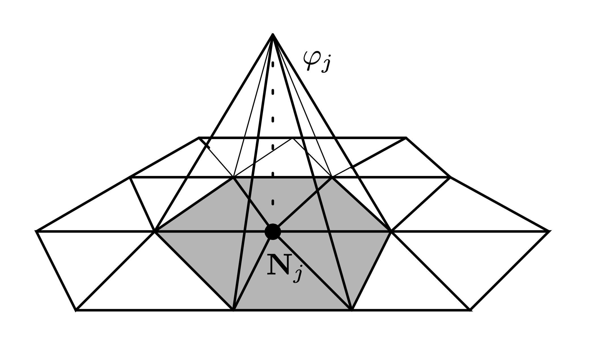

Weak Formulations
Contents
Weak Formulations#
Let \(\Omega\subset\mathbb{R}^{d}\) with \(d=2,3\) and \(\partial \Omega = \Gamma_D\cup\Gamma_N\) its boundary, let us consider the following problem (in strong form):
We have a PDE to solve with its boundary condition (BC) associated. The strong solution must be differentiable twice in classical sense and, in general, it is not always possible to prove the well-posedness of these problems. Therefore, it comes the necessity to look for the solution into a broader functional space. Without entering into too much details on this topic, this sections aims to present the typical procedure to be followed when a weak formulation must be derived (its necessary to assemble the algebraic system coming from the Finite element method).
Let \(\mathcal{V}\subset\mathcal{H}^1, \mathcal{V}_0\subset\mathcal{H}^1\) the trial and test space defined as
Given \(v\in\mathcal{V}_0\), the PDE is multipied (in \(L^2\) sense) by \(v\)
and by applying the integration by parts formula and the effect of the BCs
Galerkin approximation#
Let us introduce a computational grid \(\mathcal{T}_h\) (dim\(\mathcal{T}_h = \mathcal{N}_h\)) of the domain \(\Omega\) and the finite dimensional spaces \(\mathcal{V}_h\subset\mathcal{V}\) and \(\mathcal{V}_{h,0}\subset\mathcal{V}_0\). The Galerkin approximation [2, 3] reads: *find \(u_h\in\mathcal{V}_h\) s.t.
Finite element algebraic formulation#
The finite dimensional formulation is necessary to assemble the associated linear system. Let us consider the homogeneous Dirichlet case, \(u_D = 0\) (to which we can always reduce through a lifting procedure), and let us introduce a basis \(\left\{\phi_j\right\}_{j=1}^{\mathcal{N}_h}\) such that any function \(u_h\in\mathcal{V}_h\) can be expressed as a linear combination of the basis functions
Remark 1
The choice of the basis functions results in different versions of the algebraic system. The most natural choice is given by the hat functions, represented in the following figure. 
By taking \(v_h=\phi_k\) as the test function, the Galerkin problem reduces to
then, the linear expansion can be introduced into the problem which results (in index notation)
By defining the matrix \(A_{kj} = \displaystyle\int_\Omega \nabla \phi_j\cdot \nabla \phi_k \,d\Omega\) and the vectors \(f_k = \displaystyle\int_\Omega f_h\,\phi_k\,d\Omega\) and \(g_k = \displaystyle\int_{\Gamma_N}g\,\phi_k\,d\sigma\), the problem into the following linear system in the unknowns \(\alpha_j\)